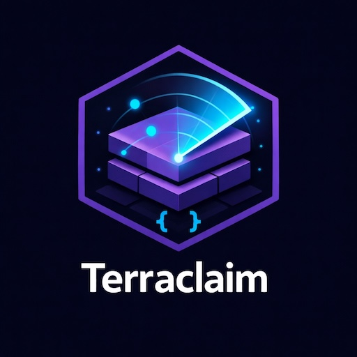

Terraclaim scans your AWS account and generates ready-to-use Terraform
import {} blocks,
resource skeletons, and S3 remote-state backends. No click-ops. No paid tools.
The instinct is to think of this as "exporting Terraform." It is not. What you are actually doing is closer to reverse compilation: discovering all resources across accounts and regions, generating Terraform configuration from live infrastructure, reconstructing dependencies, capturing state, and then refactoring everything into something a human can maintain.
Terraformer, the tool most guides recommend, was built by the Waze engineering team
and has not had meaningful maintenance in years. It works, but it predates
Terraform's native import {} blocks and generates output that needs
significant cleanup.
Former2 is primarily a browser-based tool, and the CLI variant is a separate community project with limited coverage. Both are fine for getting a rough baseline, but neither should be your primary strategy in 2026.
Resources reference each other in ways that tooling will not always catch. Some services do not map cleanly to Terraform resources no matter what you do.
IAM is particularly brutal — the relationship between roles, policies, attachments, and instance profiles is rarely clean in a lived-in estate. Accept these rough edges going in and you will be far less surprised.
Terraclaim uses the AWS CLI to discover your resources, then writes the Terraform files needed to bring them under version control — with no manual resource hunting required.
Run the script against one region or sweep an entire organisation across multiple accounts and regions.
One import {} block per discovered resource, grouped into per-service directories — ready for Terraform 1.5+.
Run terraform plan -generate-config-out=generated.tf in any service dir. Terraform reads live state and writes fully-populated HCL.
Run drift.sh regularly to catch resources created or deleted outside Terraform. Use --apply to patch imports.tf automatically.
All the core services you need to bring a real-world AWS estate under Terraform control.
EKS includes clusters, node groups, addons, and Fargate profiles.
VPC includes subnets, security groups, route tables, internet gateways, and NAT gateways.
IAM includes roles, instance profiles, and OIDC providers.
User pools, clients, and identity pools — fully paginated beyond the 60-pool API limit.
Each service gets its own directory with three files that Terraform can use immediately.
One import {} block per discovered resource.
import { to = aws_eks_cluster.cluster_production id = "production" } import { to = aws_rds_instance.db_primary id = "prod-postgres-01" }
S3 remote state configuration and AWS provider block, ready to init.
terraform { backend "s3" { bucket = "my-tf-state" key = "us-east-1/eks/terraform.tfstate" region = "us-east-1" } }
Empty resource skeletons matching every import block — populated by terraform plan -generate-config-out.
resource "aws_eks_cluster" "cluster_production" { # populated by terraform plan # -generate-config-out=generated.tf }
Organised by account → region → service for easy navigation.
tf-output/
├── summary.txt
└── 123456789012/
├── us-east-1/
│ ├── ec2/
│ ├── eks/
│ └── rds/
└── eu-west-1/
Once your Terraform baseline is committed, drift.sh re-scans AWS and
diffs the results against your imports.tf files — no AWS Resource Explorer required.
Found in AWS but missing from imports.tf. With --apply, new import {} blocks are appended automatically.
Present in imports.tf but no longer in AWS. With --apply, stale blocks are commented out with a timestamp.
Drop drift.sh into a nightly CI job. Pipe the output to Slack or write it to --report to track drift over time.
# report only ./drift.sh --output ./tf-output --regions "us-east-1" # apply changes to imports.tf ./drift.sh --output ./tf-output --regions "us-east-1" --apply ------------------------------------------------------- NEW (2 resource(s) found in AWS, not in imports.tf) + aws_instance.web_server_new (id: i-0abc123def456) + aws_instance.batch_worker (id: i-0def789abc012) REMOVED (1 resource(s) in imports.tf, no longer in AWS) - aws_instance.old_bastion (id: i-0111222333444) ------------------------------------------------------- Unchanged: 22 New (not yet imported): 2 Removed (stale): 1
After exporting, run.sh automates the terraform init +
terraform plan -generate-config-out=generated.tf step across every
service directory — no more running it manually per folder.
Finds every directory with an imports.tf and runs Terraform in it. Filter by account, region, or service to process a subset.
Up to --parallel 3 concurrent Terraform processes by default. Logs per directory, pass/fail/no-change summary at the end.
terraclaim.sh and drift.sh scan up to --parallel 5 services simultaneously. All AWS API calls automatically retry on throttling with exponential back-off.
# process everything ./run.sh --output ./tf-output # filter to specific services and region ./run.sh --output ./tf-output \ --regions "us-east-1" \ --services "ec2,eks,rds" # preview directories without running terraform ./run.sh --output ./tf-output --dry-run ------------------------------------------------------- [OK] 123456789012/us-east-1/eks [OK] 123456789012/us-east-1/rds [no-change] 123456789012/us-east-1/s3 [FAIL] 123456789012/us-east-1/iam (see .run.log) ------------------------------------------------------- Succeeded (changes written): 2 No changes: 1 Failed: 1
Three tools required: AWS CLI v2, Terraform 1.5+, and jq. Works on the Bash that ships with macOS (3.2+).
Install everything at once on macOS: brew install awscli terraform jq
git clone https://github.com/andrewbakercloudscale/terraclaim.git cd terraclaim chmod +x terraclaim.sh reconcile.sh drift.sh run.sh
./terraclaim.sh \ --regions "us-east-1" \ --services "ec2,vpc,rds" \ --dry-run
./terraclaim.sh \ --regions "us-east-1,eu-west-1" \ --services "ec2,eks,rds,s3,vpc" \ --state-bucket my-tf-state-prod \ --parallel 5 \ --output ./tf-output
./terraclaim.sh \ --profile prod-readonly \ --regions "eu-west-1" \ --services "ec2,vpc,rds,eks" \ --output ./tf-output
Pass any named profile from ~/.aws/config. Works alongside --role for cross-account sweeps — the profile authenticates the base caller, the role is assumed per account.
./terraclaim.sh \ --regions "us-east-1" \ --tags "Env=prod,Team=sre" \ --output ./tf-output
Only imports resources that carry the specified tags. Uses the Resource Groups Tagging API — no extra setup required beyond the tags themselves.
./terraclaim.sh \ --regions "us-east-1,eu-west-1" \ --output ./tf-output \ --resume
Skips account/region/service combinations already written to the output directory. Safe to run again after a network interruption or timeout.
./run.sh --output ./tf-output
Runs terraform init + terraform plan -generate-config-out=generated.tf in every service directory. Review generated.tf, remove computed attributes, and commit.